The UI that appears in a developer's terminal. Every screen below is drawn on a real character grid with IBM Plex Mono, and nothing inside the terminal surface is drawn that a terminal cannot print — no rounded pills, no shadows, no gradients in the output. The premium is in the discipline: one accent for identity, four semantic inks for verdicts, one reserved ink for provenance, alignment as the layout system, and micro-charts built from block elements.
Brand blue marks identity and interaction only. Semantic inks mark verdicts only. Everything else is a four-step neutral ramp. Rainbow output is the generic look; this is not it.
Ruled section headings, aligned kv blocks, right-aligned numerics, a 2-column gutter. ASCII box-drawing frames are banned from output: they fight wrapping, diffs and screen readers.
A verdict always carries its scope. Attribution prints as a weighted score beside its methodology version,
never as a cause. One observation point is labelled as one. Missing fields are —, never 0.
full · ansi256 · ansi16 · plain · json. Removing colour removes nothing: shape, glyph and position still carry every state, so NO_COLOR, CI logs and colour-blind readers get the same information.
✓ × ! · › → │ ─ █ ▁…█ — … — every glyph exists in IBM Plex Mono and in the fonts real terminals
ship. A mark a font cannot draw is a tofu box in a verification record.
The spinner is a caliper sweeping a six-cell track, verbs say what is happening, live mode redraws one status line at 1 Hz and never touches scrollback or the alternate screen.
| swatch | role | dark | light | 256 | 16 | carries |
|---|---|---|---|---|---|---|
| brand | #3B82F6 | #2563EB | 68 | blue | rails, links, selection, the command word | |
| brand.bright | #60A5FA | #1D4ED8 | 75 | brightblue | hover, focus, interactive affordance on dark | |
| verdict.up | #34D399 | #059669 | 78 | green | confirmed reachable · verification held | |
| verdict.degraded | #FBBF24 | #D97706 | 214 | yellow | degraded · advisory · unsigned artifact | |
| verdict.down | #F87171 | #DC2626 | 203 | red | confirmed failure · verification did not hold | |
| verdict.unknown | #6B7893 | #69748A | 61 | brightblack | no observation · field absent (tertiary ink on purpose) | |
| provenance | #22D3EE | #0891B2 | 45 | cyan | reserved: vantage point, methodology, hash, signature state | |
| text.primary | #F8FAFC | #0B1220 | 255 | white | values, verdict words, the command you typed | |
| text.secondary | #A5B0C2 | #3F4A5C | 145 | brightblack | prose, hints, table body | |
| text.tertiary | #6B7893 | #69748A | 61 | brightblack | keys, column headers, units | |
| text.faint | #4C5A75 | #9AA4B8 | 238 | brightblack | rules, ticks, scaffolding — never meaning alone |
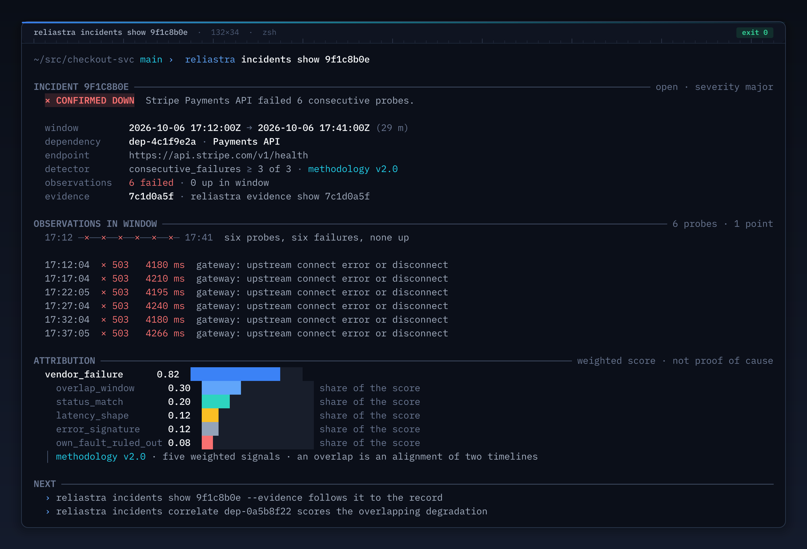
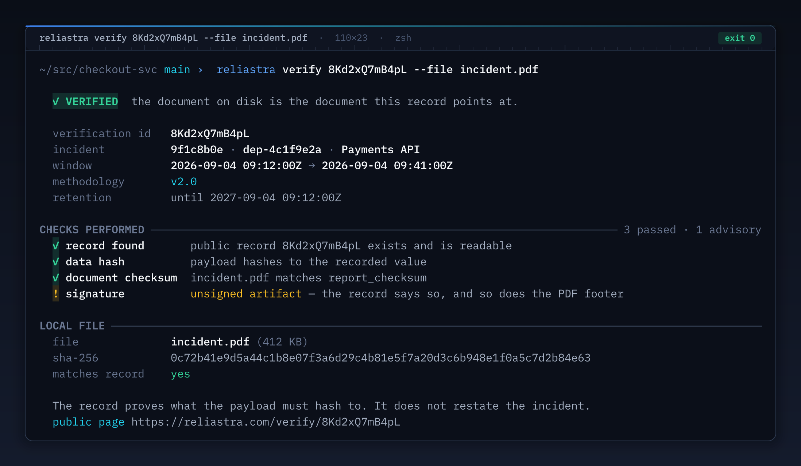
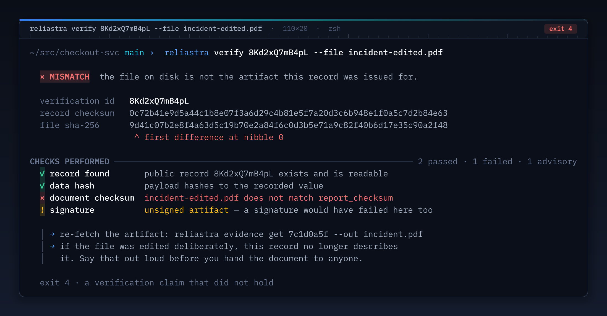
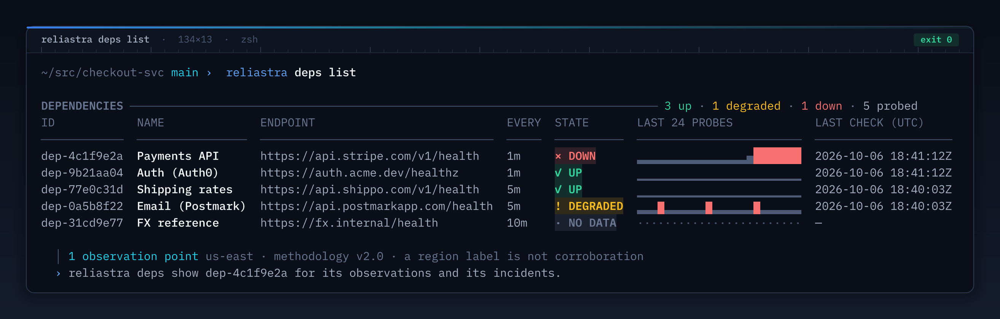
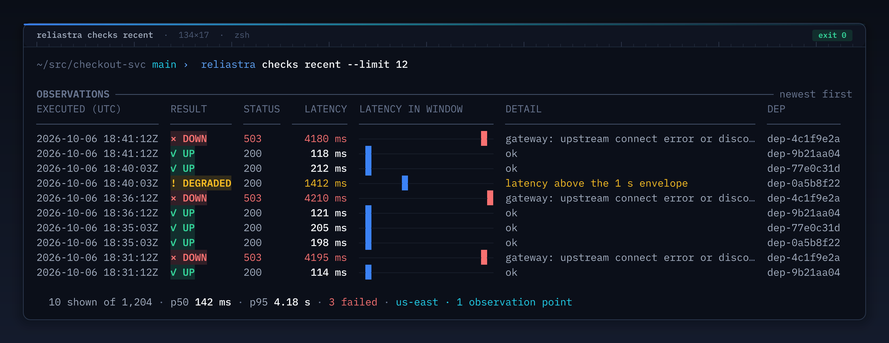
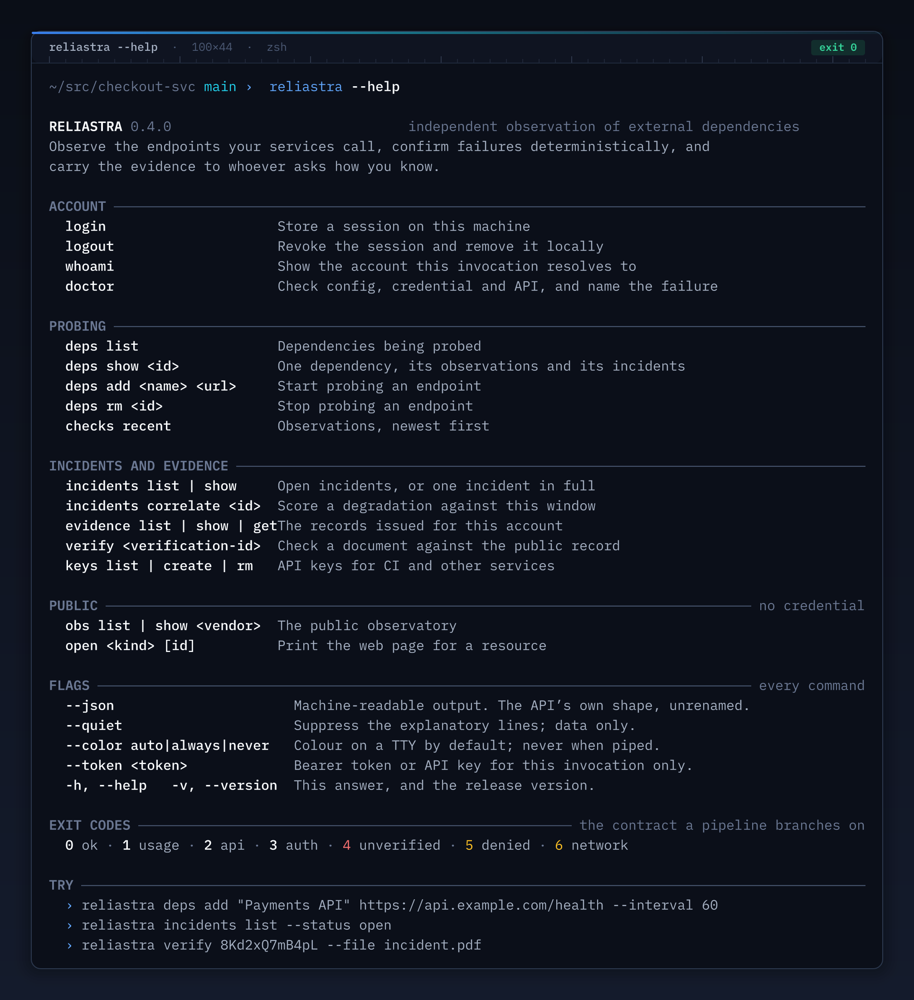
--color auto|always|never flag this design introduces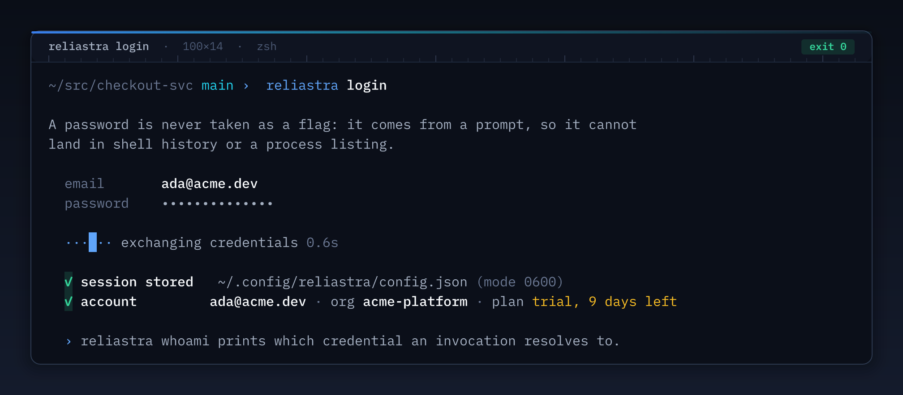
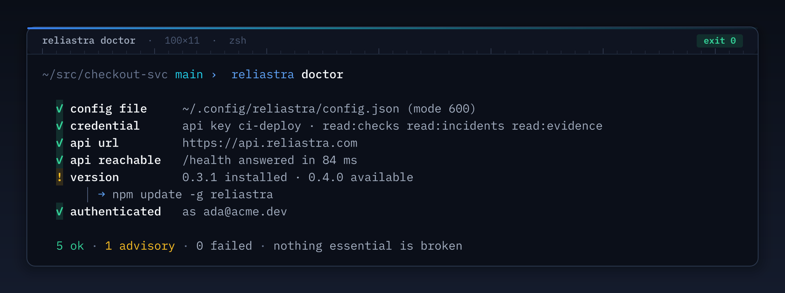
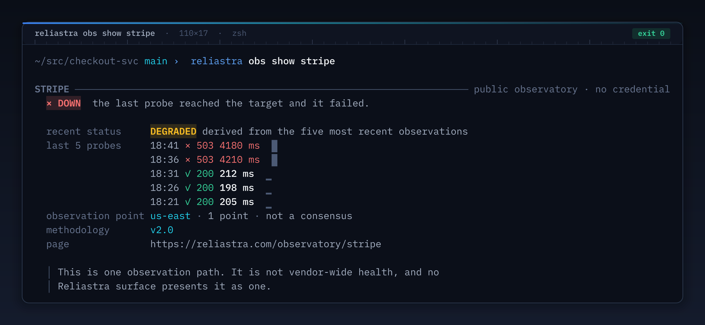
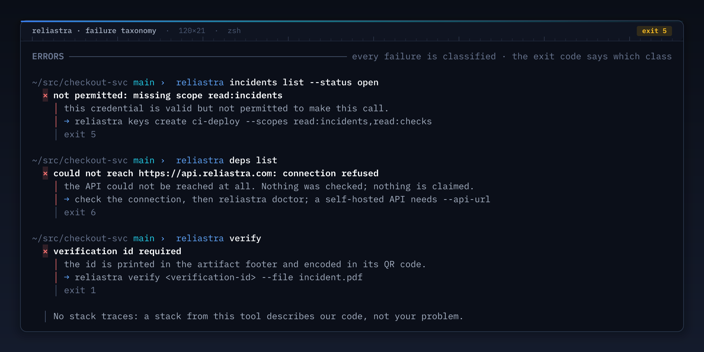
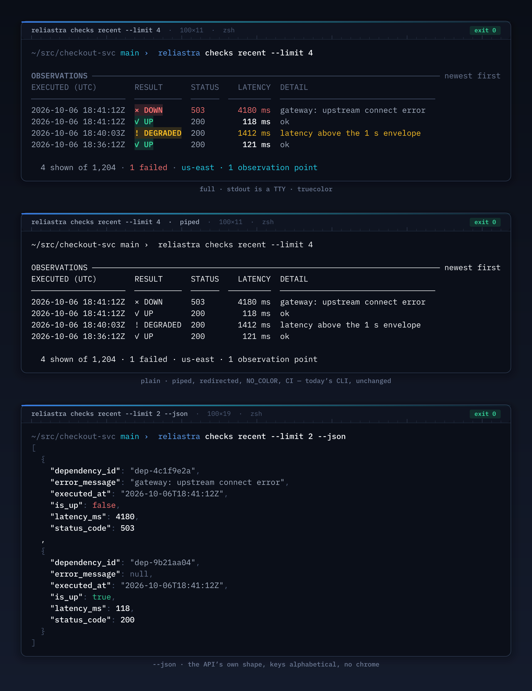
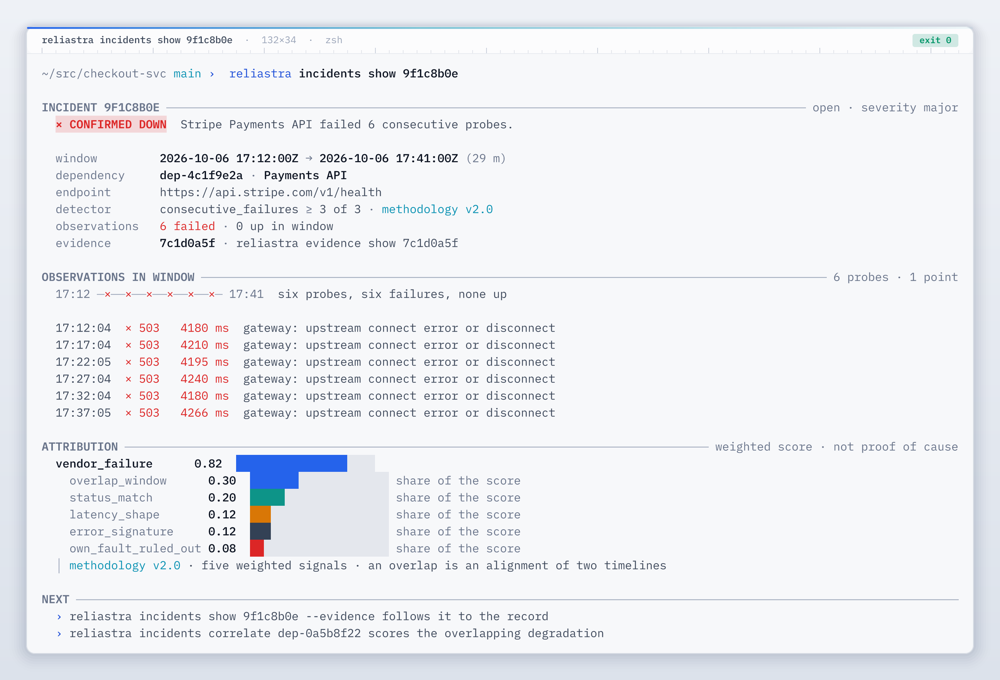
--rs-* tokens; the meter track is a
mixed ink so it stays quiet on both themes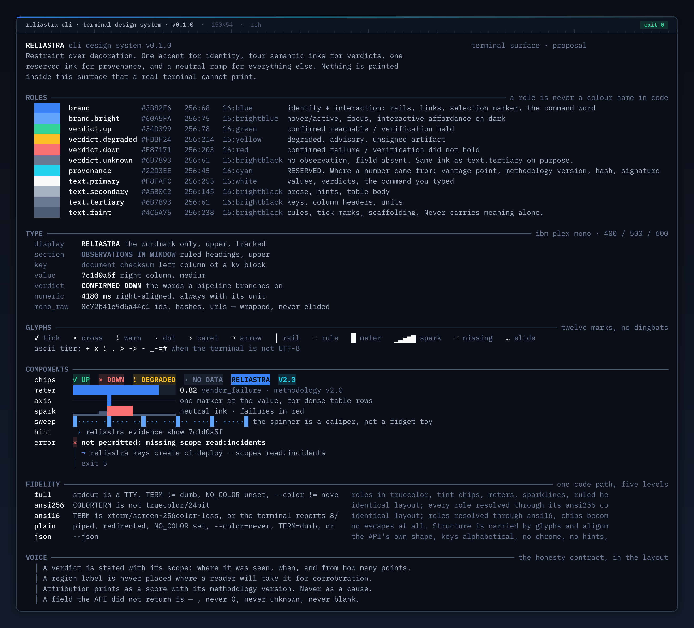
# the mockups and the bytes come from one source of truth python3 design/cli/demo/reliastra-demo.py --list python3 design/cli/demo/reliastra-demo.py 06 --play # line-by-line reveal python3 design/cli/demo/reliastra-demo.py 04 --color never # the plain fidelity level python3 design/cli/demo/reliastra-demo.py all --play # regenerate the mockups (needs the render toolchain, see design/cli/README.md) node design/cli/render/build.mjs
theme.go table generated from tokens.json: role → truecolor / 256 / 16 / plain.
Code references roles (verdict.down), never hex values.--color, NO_COLOR, COLORTERM,
TERM, isatty) and stored on the output sink; every renderer in output.go reads it.renderTable gains: right-aligned numeric columns, per-column glyph cells, and the probe strip
at ≥120 columns only. Below 100 columns tables degrade to kv stacks; nothing is silently elided.█▇▆…▁) are emitted as glyphs; the mock renderer paints them as cells because
that is their Unicode definition and what every terminal font does.--json shape and the —-for-missing rule are untouched. This design adds
presentation, never semantics.Reliastra CLI terminal design system · v0.1.0 · proposal for review before any Go changes · mockups rendered by design/cli/render (resvg-js + IBM Plex Mono) from design/cli/render/screens/*